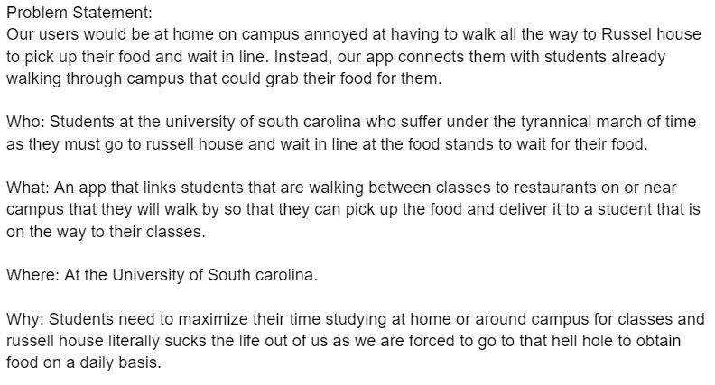
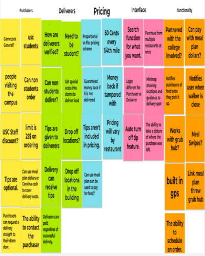
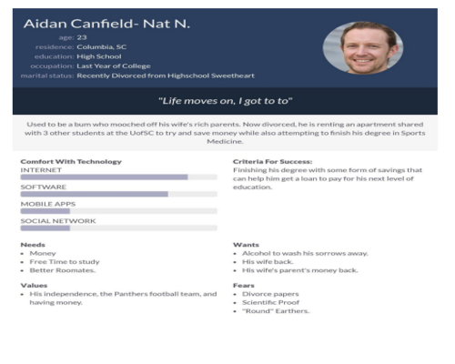
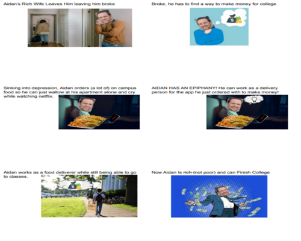
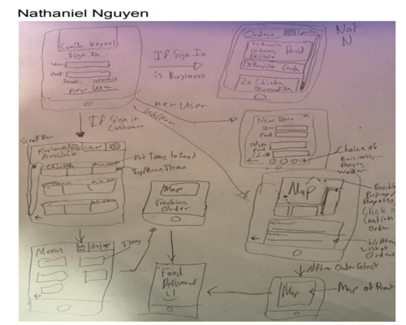

Problem Statement: The Russel House Workaround

Our users would be at home on campus annoyed at having to walk all the way to Russel house to pick up their food and wait in line. Instead, our app connects them with students already walking through campus that could grab their food for them.
Affinity Diagram: The Russel House Workaround

Issues, Ideas, and More regarding our little doo dad.
Personas: 5 Personas for Food Delivery App

The persona of one of the mulitutde of types of users that our app may have.
Storyboard: 5 Storyboards about our personas

The storyboards that represent how a multitude of different users might interact with the app we make.
Sketches: Sketches for app

The sketches made by team members to represent how they envision the app looking.
Paper Prototype

This is a paper prototype of how our app should look directly.
High Fidelity Prototype

A high fidelity mock up of what we intend for Sustenance Kernel to look like.